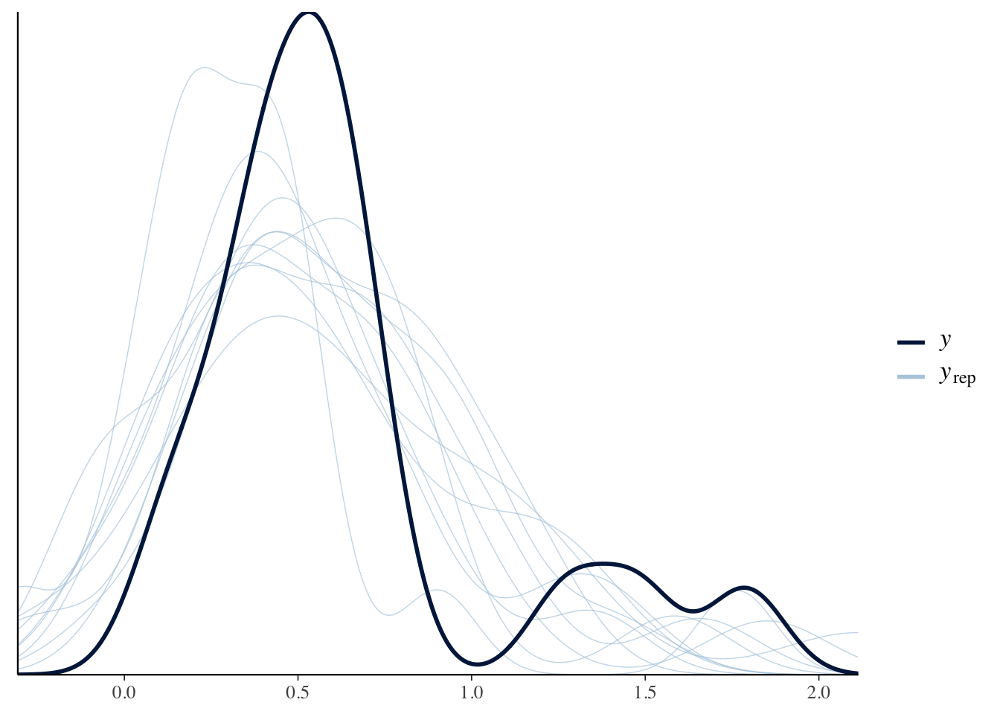

16 Bayesian approaches
16.1 My (David Reinstein’s) uses for Bayesian approaches (brainstorm)
16.1.1 Meta-analysis of previous evidence
Of prior work, especially on motivators of (effective) charitable giving and responses to effectiveness information
Of my own series’ of experiments (potentially joint with prior work)
16.1.2 Inference, particularly about ‘null effects’
When/what can we say about the ‘absence of an effect’
How to integrate into inferences from diagnostic testing (e.g., common-trend assumption)?
16.1.3 ‘Policy’ and business implications and recommendations
In particular, in a charitable giving social-media fundraising context, we might consider whether it is worth offering ‘seed contributions’ to encourage giving on existing pages. If so, ‘which pages should we seed and how much?’
16.1.4 Theory-driven inference about optimizing agents, esp. in strategic settings
- Especially in the context od ‘predicted contributions to public goods… and 2nd order beliefs’
16.1.5 Experimental design
Optimal treatment assignment, with previous observables and a track record
Sequential designs
Bayesian Power calculation
Package loadings from Kurtz:
16.2 ‘Statistical thinking’ (McElreath) and AJ Kurtz ‘recoded’ (bookdown): highlights and notes
McElreath’s course and text looks great. I’m taking selective notes here; I’ll try to incorporate content from both text and youtube video lectures.
AJ Kurtz has re-written the code using the brms package, which he finds superior. More crucially for me, he redoes the code using ggplot and tidyverse?
I’ve also forked Kurtz’s repo here, which I may play with.
16.2.1 The Golem of Prague (Chapter 1)
Don’t let your model or approach turn into a Golem you can’t control. Don’t ‘believe the model’; continuously validate it. The map is not the territory.
‘Statistical decision trees’ lend a false sense of security… and almost never fit the actual case we are dealing with. (fig 1.1)
Statistical models are non-unique maps to ‘process models’ which are non-unique maps to hypotheses. (He offers the example of neutral evolutionary selection’ example.)
This makes strict falsification impossible: How can you falsify a hypothesis/theory if it corresponds to a wide set of process models and statistical models, many of which overlap other hypotheses?
But this warning is at least as relevant for Bayesian analyses, which must be based on specifically defined (term) models of the DGP etc. Thus he recommends caution and continuous (?) interplay between the model and the data. (See next chapter … ‘small worlds and large worlds’.)
He also suggests we refer not to ‘Confidence intervals’ or even ‘Credible intervals’, but to ‘Consistent intervals’ … as in ‘these intervals are consistent with the model and data’.
And…
[so you should] ‘…Explicitly compare predictions of more than one model’
Rethinking: Is NHST falsificationist?
(#fig:failure_of_falsification.png)From McElreath video lecture 1
Null hypothesis significance testing, NHST, is often identified with the falsificationist, or Popperian, philosophy of science. However, usually NHST is used to falsify a null hypothesis, not the actual research hypothesis. So the falsification is being done to something other than the explanatory model. This seems the reverse from Karl Popper’s philosophy.
I.e., scientists have turned things upside down; originally the idea was that you had substitute of hypotheses that you would want to falsify and now we try to falsify silly null hypotheses that “nothing is going on”. You should try to really build a hypothesis and test it not just reject that nothing is going on.
16.2.1.1 Book’s foci
- Bayesian data analysis
- Multilevel modeling
- Model comparison using information criteria
16.2.2 Small Worlds and Large Worlds (Ch 2)
… The way that Bayesian models learn from evidence is arguably optimal in the small world. When their assumptions approximate reality, they also perform well in the large world. But large world performance has to be demonstrated rather than logically deduced. (p. 20)
We imagine a bag filled with four marbles, each of which is blue or white.
“So, if we’re willing to code the marbles as 0 =”white" 1 = “blue”, we can arrange the possibility data in a tibble as follows." I.e., we can consider the five possible worlds, in each of which the bag has a different number of white and blue marbles, and represent each of these worlds as a column vector:
d <-
tibble(p_1 = 0,
p_2 = rep(1:0, times = c(1, 3)),
p_3 = rep(1:0, times = c(2, 2)),
p_4 = rep(1:0, times = c(3, 1)),
p_5 = 1)
d| p_1 | p_2 | p_3 | p_4 | p_5 |
|---|---|---|---|---|
| 0 | 1 | 1 | 1 | 1 |
| 0 | 0 | 1 | 1 | 1 |
| 0 | 0 | 0 | 1 | 1 |
| 0 | 0 | 0 | 0 | 1 |
We visualize this in the plot below, where each column is one ‘world’:
d %>%
gather() %>% #make it long, with an ket variable for the possibility 'world'
mutate(x = rep(1:4, times = 5), #an index for 'which ball'
possibility = rep(1:5, each = 4)) %>% #distributing the 'which world' index
ggplot(aes(x = x, y = possibility,
fill = value %>% as.character())) +
geom_point(shape = 21, size = 5) +
scale_fill_manual(values = c("white", "navy")) +
scale_x_continuous(NULL, breaks = NULL) +
coord_cartesian(xlim = c(.75, 4.25),
ylim = c(.75, 5.25)) +
theme(legend.position = "none")
Simple combinatorics (permutations rule) tells us how many ‘ways’ we can draw 1, 2, and 3 marbles… Here we think about ‘which’ marble is drawn, and not just ‘which color’ it is. We can draw marble 1-4, the first time, then 1-4 the second time, and then 1-4 the third time… so possibilities=marbles ^ draw.
| draw | marbles | possibilities |
|---|---|---|
| 1 | 4 | 4 |
| 2 | 4 | 16 |
| 3 | 4 | 64 |
Next, there is a huge amount of code explaining how to make the ‘garden of forking paths’ diagrams. I’m basically going to skip all that code, and paste in a few images. You can find all the code HERE
Suppose there is only one blue ball and three white balls, possibility ‘2’ above. For this world, we see the full ‘garden of forking paths’ — the number of ways to select 1, 2, and 3 balls (with replacement) — below.
Every path starting from the center is a possible (sequence of) draws.

Figure 16.1: All possible draws of three balls
Now the inferential exercise: we want to know (the likelihood) of each of the five possible ‘worlds’. As we draw data we know we are proceeding along one of some subset of the forking paths.
For example, under possible world 2, if we draw Blue, then White, then Blue, this could have occured with any of the following paths (consider a draw of each of the white balls as distinct):

Figure 16.2: All possible draws of three balls
We see that under World 2 there are 3 ways of getting this sequence. 3 out of \(4^3\) equally likely paths under World 2, or a \(3/64\) chance (about 5%).
We can do similar for the other possible worlds; multiplying the ‘ways to produce each draw’ in the path yields the ‘total ways to produce the path’, under each world.
# if we make two custom functions, here, it will simplify the code within `mutate()`, below
n_blue <- function(x) {
rowSums(x == "b")
}
n_white <- function(x) {
rowSums(x == "w")
}
t <-
# for the first four columns, `p_` indexes position
tibble(p_1 = rep(c("w", "b"), times = c(1, 4)),
p_2 = rep(c("w", "b"), times = c(2, 3)),
p_3 = rep(c("w", "b"), times = c(3, 2)),
p_4 = rep(c("w", "b"), times = c(4, 1))) %>%
mutate(`draw 1: blue` = n_blue(.),
`draw 2: white` = n_white(.),
`draw 3: blue` = n_blue(.)) %>%
mutate(`ways to produce` = `draw 1: blue` * `draw 2: white` * `draw 3: blue`)
t %>%
knitr::kable()| p_1 | p_2 | p_3 | p_4 | draw 1: blue | draw 2: white | draw 3: blue | ways to produce |
|---|---|---|---|---|---|---|---|
| w | w | w | w | 0 | 4 | 0 | 0 |
| b | w | w | w | 1 | 3 | 1 | 3 |
| b | b | w | w | 2 | 2 | 2 | 8 |
| b | b | b | w | 3 | 1 | 3 | 9 |
| b | b | b | b | 4 | 0 | 4 | 0 |
Among of all possible worlds, we see the most number of ways to get B-W-B in a world 4; with three blues and one white – here there are 9 ways in total to get B-W-B. Under world 4 this sequence occurs 9/64, or roughly 14% of the time.
We can see this in the following plot. (We leave out the worlds with only one color ball, as these will have no paths that produce B-W-B). Below, each partitioned section represents one world, and the paths in that world that could produce B-W-B are shown.

Figure 16.3: All possible draws of three balls
Three paths, versus 8 paths, versus nine paths…
Does this reveal world 4 to be the most likely contents of the present bag? Not necessarily. Suppose we knew ex-ante, from the factory, that ‘99 bags out of 100 have equal numbers of whites and blues.’ Then, it would be much more likely that this bag was from an equal-color bag (world 3), even though this draw is more likely conditional on the bag being from world 4. We need will to consider the base-rate probabilities as well.
This in turn motivates the standard ‘false positive/false negative HIV test’ example.
16.2.3 Using prior information
We may have prior information about the relative plausibility of each conjecture. This prior information could arise from knowledge of how the contents of the bag were generated. It could also arise from previous data. Or we might want to act as if we had prior information, so we can build conservatism into the analysis. Whatever the source, it would help to have a way to use prior information. Luckily there is a natural solution: Just multiply the prior count by the new count. (p. 25)
This seems to easy to be true, but our garden illustration helps us understand why it is the case.
16.2.3.1 “Multiply in” new information
First consider, what if we had another draw from the bag, how would this adjust the ‘number of paths’ for each world? Remember, each draw is independent (replacement). We simply record the number of ways (permutations) that could lead to this draw in each world, and we multiply the previous count by this number. You can consider this visually in seeing how ‘adding an additional fork at the end of each path’ changes the count.
This is given in the table below:
t <-
t %>%
rename(`previous counts` = `ways to produce`,
`ways to produce` = `draw 1: blue`) %>%
select(p_1:p_4, `ways to produce`, `previous counts`) %>%
mutate(`new count` = `ways to produce` * `previous counts`)
t %>%
knitr::kable()| p_1 | p_2 | p_3 | p_4 | ways to produce | previous counts | new count |
|---|---|---|---|---|---|---|
| w | w | w | w | 0 | 0 | 0 |
| b | w | w | w | 1 | 3 | 3 |
| b | b | w | w | 2 | 8 | 16 |
| b | b | b | w | 3 | 9 | 27 |
| b | b | b | b | 4 | 0 | 0 |
How to incorporate prior information about the probability of each world?
Suppose your friend in the factory tells you (reliably) that “we produce 3 bags with (just) 1 blue for every 2 bags with equal counts, for every 1 bag with 3 blues.”
We can think of the ‘factory choosing which bag to produce’ as another draw, thus another path.
Here the sequence in which the information is recieved shouldn’t matter. The draws are independent (we presume).
We can thus multiply the number of paths for each marbles-in-bag world by the (relative) frequency with which the factory ‘draws’ that bag… as shown below:
t <- t %>%
select(p_1:p_4, `new count`) %>%
rename(`prior count` = `new count`) %>%
mutate(`factory count` = c(0, 3:0)) %>%
mutate(`new count` = `prior count` * `factory count`)
t %>%
knitr::kable()| p_1 | p_2 | p_3 | p_4 | prior count | factory count | new count |
|---|---|---|---|---|---|---|
| w | w | w | w | 0 | 0 | 0 |
| b | w | w | w | 3 | 3 | 9 |
| b | b | w | w | 16 | 2 | 32 |
| b | b | b | w | 27 | 1 | 27 |
| b | b | b | b | 0 | 0 | 0 |
16.2.4 From counts to probability.
16.3 Title: “Introduction to Bayesian analysis in R and Stata - Katz, Qstep”
Content from notes from this lecture
16.3.1 Why and when use Bayesian (MCMC) methods?
16.3.1.1 Pros
No need for asymptotics … good when sample sizes are small
Incorporate previous information
You can consider the ‘robustness to other priors’
Fit complex nonstandard models … e.g., with difficult functional forms or likelihood settings (more computation, less thinking)
Easy to make predictions (e.g., simulate scenarios) after estimation
Incorporate evidence, results, expert judgement
(‘restrictions’ with some lee-way?)
(ISn’t this the same as number 2?)
- Cleaner treatment/imputation of missing values … these are just parameters
16.3.1.2 Cons
Must specify prior distributions … allows subjective judgement
Different way of thinking about stats and inference; probability distributions and simulations, not much about p-values, point estimates and standard errors … path dependence
Computational cost
This is an R Markdown document. Markdown is a simple formatting syntax for authoring HTML, PDF, and MS Word documents. For more details on using R Markdown see http://rmarkdown.rstudio.com.
When you click the Knit button a document will be generated that includes both content as well as the output of any embedded R code chunks within the document. You can embed an R code chunk like this:
16.3.1.3 Why more popular today?
- Starting from around 2005 in Political Science and Sociology
Computational revolution comes from Markov chain Monte Carlo (MCMC) methods … don’t need analytical solutions
Software implementations – many in R, specialised software like EWinBugs, JAGS, STAN; also increasingly in Stata
16.3.2 Theory
Bayes theorem … inverting conditional probability thing … ‘inversion’ to make inferences about the parameters
- In Bayesian stats the parameters (and sometimes missing values) are random variables, we make probability statements about them
\[P(A|B)=P(B|A)P(A)/P(B)\]
Frequentist: Point estimates, unknown fixed parameters, data from a hyol repeataable random sample
Bayesian: Fixed data (from the experiment), parameters are random variables … results based on probability distributions about rthese
Classical statistics: likelihood of data given parameter: \(p(y|\theta)\)
Bayes we want, \(p(\theta|y) = p(y|\theta)p(\theta)/p(y)\)
\(p(y)\) is a ‘constant’ in our estimation … the data is fixed.
So it’s proportional to \(p(\theta|y) = p(y|\theta)\times p(\theta)\)
\(p(y|\theta)\) is what we max when we do ML
$ p()$: prior distribution capturing beliefs about \(\theta\)
16.3.2.1 So how do we estimate it?
Specify a probability model, a distribution for Y (likelihood function) and the priors for \(\theta\)
Solve (find) the posterior distribution \(p(\theta|Y)\) and summarise the parameters of interest
In practice, step 2 is usually done via MCMC simulation rather than analytically.
… via simulations, I approach the ‘true’ value on \(\theta\)
(Given ‘regularity conditions’)
16.3.2.2 Linear regression model example
\[Y = x'\beta+\epsilon\] with n obs
only random term is epsilon … natural candidate is a normal distribution, so \(Y \sim N(x'\beta,\sigma^2_e)\)
So we want to find \(p(\beta, \sigma^2_\epsilon|Y,X)\). This depends on the choices of \(p(\beta)\) and \(p(\epsilon)\). Could choose conjugate priors, leading to a particular joint posterior, you can solve it analytically.
Can yield a joint posterior.
Instead, let’s assume that the latter (variance) parameter is known, you can show that the posterior for \(\beta\) is also normally distributed. (Conjugate)
Similarly, if we assume \(\beta\) is known, if the variance term had an inverse gamma distribution (prior), so will the posterior.
In these conjugate priors, the posterior mean will be a weighted average of the priors and the data.
16.3.2.3 Gibbs
Needs closed form conditional posterior for every parameter.
What Gibbs sampler does is break the parameter space into sets of parameters
Choose starting values, \(\theta^0_1,...\theta^0_k\)
sample from the first parameter’s distribution given the others … the second one, … the k’th one .
Repeat step 2 … thousands of times (starting with the parameters from the previous iteration) Eventually ‘we obtain samples of \(p(\theta|y)\)’
But if we don’t have a closed form, we cannot simply sample from known distributions in each step
E.g., in case of Logit distribution.
16.3.2.4 Metropolis Hastings
- Choose ‘proposal distribution’ to sample parameter values (a candidate like normal, uniform)
- Start w a prelim guess for parameter values \(\theta_0\)
- At iteration t sample a proposal \(\theta_t\) from \(p(\theta_t|\theta_{t-1})\) ?? what does this come from?
- If \(p(\theta_t|y)>p(\theta_{t-1}|y)\) accept it as the new value of \(\theta\). ??? how is this computed if we don’t have conjugate closed-form posteriors?
- Otherwise flip a coin with probability r = (ratio of those probabilities)
- if coin tosses heads, accept as new theta, otherwise stay at previous theta
- allows algorithm to avoid getting stuck at local maxima
Commonly used proposal: random walk sample: \(\theta_t=\theta_{t-1}+z_t\), \(z_t \sim f\)
?? I do this because there is no analytical way to derive this, unlike in the conjugate case, where we might use the Gibbs
- can combine Gibbs with Metropolis steps; relevant to some problems
16.3.2.5 Assessing convergence
- previous … ‘eyeballing’
- formal:
- single-chain tests (Geweke/Heidel) … is the last part of the chain stable (stationary)… compare simulation at middle and end, is there much variation?
- multiple-chain test… (starting from different values), do they end similar … Gelman-Rubin diagnosting \(\hat{R}\)
- typically either a very long chain and use GH convergence, or multiple shorter chains and use \(\hat{R}\)
Gabriel: Gelman-Rubin is probably preferred; more conservative
?? What am I iterating towards? Converging on what?
16.3.2.6 Assesing ‘fit’ in Bayesian
- No r-squared
- Typical measure is ‘posterior predictive comparisons’
\(p(y_{replicated}|y_{observed}= ...\)
- Simulate data from estimated parameters
- Compare to observed data
- Use an overall fit measure to assess model fit
E.g., percent correct predictions (binary), whether the true data is within the 95% CI of the replicates, deviance
For each replicate Choose statistic D, compare the replicated
\(D(y^s_{replicated})\) against \(D(y^s_{observed})\)
Quantify the discrepancy … percent of correct predictions, proportion of times replicated y is below true y … compute ‘bayesian p-value’s’
Systematic differences between replicate and actual data indicate model limitations
(?? what are reasonable values here??)
16.3.3 Comparing models … Equivalent of ‘likelihood’
‘Deviance Information Criterion’ (most used); specific for MCMC simulations: compares expected LL of the model (of the data given the estimated parameters; average here across much of the later points in the chain) against the llhd at the posterior parameter mean. Always select model with lowest DIC.
Bayes Factor (less used): Ratio of llhd of the models; higher BF means model is more supported; BF>10 seen to provide strong evidence for model w higher value
16.3.4 On choosing priors
Most social scientists use non-informative or vague priors; i.e., large variance… e.g., \(\beta \sim N(0,1000)\)
But its often useful to incorporate information into your priors
Small pilot to test, \(\rightarrow\) data \(Y_1\), another study gives data \(Y_2\); repeated application of Bayes theorem gives the posterior.
Same result whether you obtained these together, or whether you did one and then updated (e.g., via an MCMC, starting with the first one as a prior)
Conjugate priors (mentioned before)
- Jeffrey’s priors (??)
16.3.5 Implementation
If you don’t need to do fancy things, and don’t want to (?) generate the full posterior distribution (or something)
Some Stata/R commands that make Bayesian look frequentist.
In Jags and Winbugs, we only have to specify the prior… rest is done for us
Jags is great … you only need to do self-coding with lots of data and super complicated models as it can freeze up
We went through it the fancy way in Probit.R
Then the easy way with ‘script probit Jags.R’
16.3.6 Generate predictions from a WinBUGS model
You can just generate these outcomes …
Prediction: generate a new observation #note, he is doing one per iteration, but since these are convergent it would be basically the same if you just chose a random iteration and did all the draws from that one
16.3.7 Missing data case
One solution – multiple imputation
- choose imputation model to predict missings,
- generate many copies of orig data set, imputing missibg value for each
- 2 more steps here
Need a model for X|alpha, because missing variables are random variables
16.3.8 Stata
Has some rather simple implementations; e.g., just using commands like bayes: regress y x
16.3.9 R mcmc pac
Also simple code; great for standard use
Speedup with parallelization; see “script for parallel probit.R” and “parallelprobit.R”
More advanced: C++; can integrate it with Rcpp, or even use Exeter’s ISCA cluster
## speed dist
## Min. : 4.0 Min. : 2
## 1st Qu.:12.0 1st Qu.: 26
## Median :15.0 Median : 36
## Mean :15.4 Mean : 43
## 3rd Qu.:19.0 3rd Qu.: 56
## Max. :25.0 Max. :12016.4 Other resources and notes to integrate
Hey stats twitter: got a very sharp psych UG student wanting to dive into Bayes. Many resources are too technical (i.e., not good teaching texts for UG level, but useful references). Where should I point her?
— Tom Carpenter (@tcarpenter216) February 1, 2020